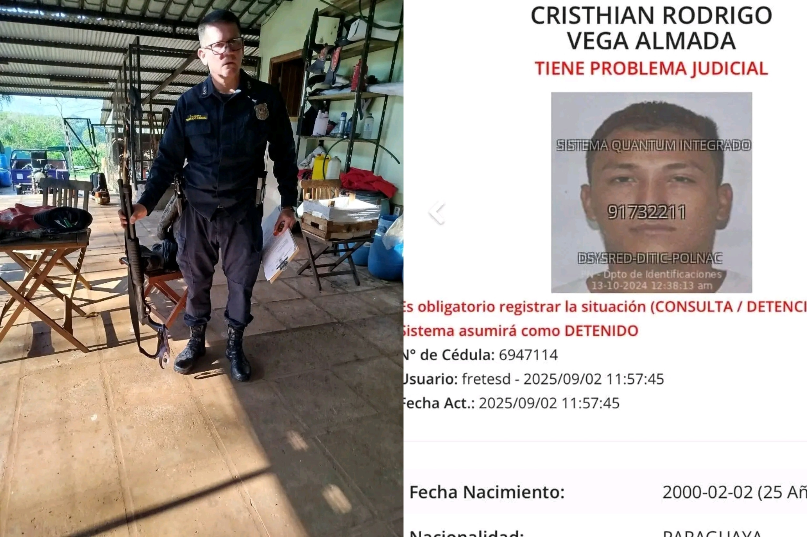

Imputan por homicidio doloso y violación de Ley de Armas a guardia de seguridad que mató a presunto ladrón
Fecha: 2025-09-08

El guardia de seguridad que disparó contra un presunto delincuente fue imputado por homicidio doloso y violación de la Ley de Armas, según confirmó el fiscal de la causa, Édgar Delgado.
De acuerdo con la versión del representante del Ministerio Público, “se está construyendo un caso de dolo eventual porque el disparo lo realizó hacia la humanidad de la víctima. La distancia no representaba ningún peligro presente para el guardia porque la víctima no contaba con ningún tipo de arma. El otro tenía otro medio para repeler el peligro”, explicó Delgado.
El hecho generó una fuerte polémica, ya que, según muchos sectores de la sociedad, parece que los delincuentes gozan de más protección legal que los trabajadores y ciudadanos honestos que arriesgan su vida frente a situaciones de inseguridad. Mientras el guardia deberá enfrentar un proceso judicial que podría costarle años de cárcel, el fallecido había sido sindicado como parte de un intento de robo.
La discusión vuelve a poner en el centro de la agenda el eterno debate: ¿tienen más derechos los bandidos que la gente trabajadora que solo quiere defenderse?. La ciudadanía reclama leyes más equilibradas que protejan a quienes actúan en legítima defensa, al tiempo que exigen mayor firmeza contra la delincuencia que día a día afecta a comerciantes, trabajadores y familias.
← Volver al inicio